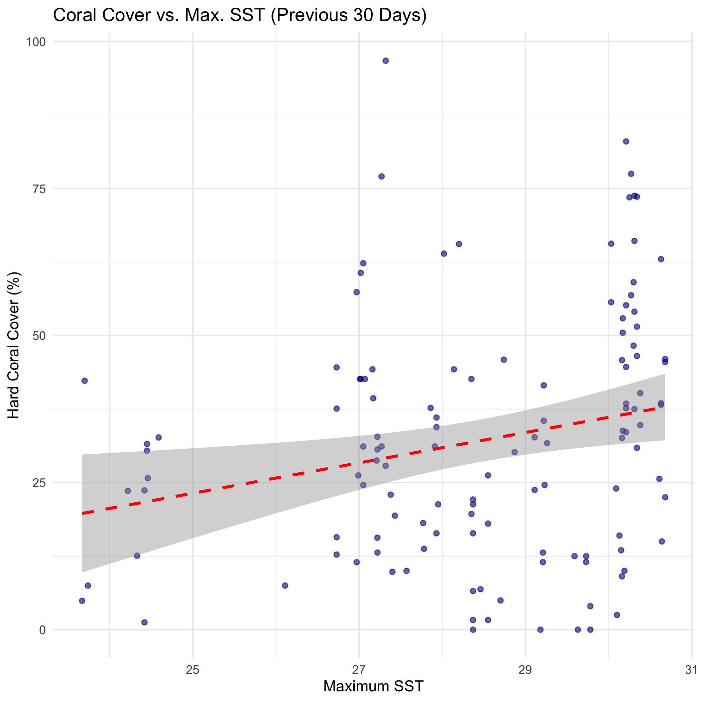

Getting environmental covariates for GFCR locations
covariates.RmdThis analysis extracts covariates for GFCR project sites from MERMAID, then combines that with coral cover data to plot the relationship between the two. In this example, the environmental data is maximum daily Sea Surface Temperature (SST) for a given number of days prior to the survey.
Get project data from MERMAID
The first step is to get coral cover data for GFCR projects from MERMAID. The following gets summary sample events, and then filters for projects whose tags contain “GFCR”, and projects that have hard coral cover data.
summary_sampleevents <- mermaid_get_summary_sampleevents()
gfcr_summary_sampleevents <- summary_sampleevents %>%
filter(str_detect(tags, "GFCR")) %>%
filter(!is.na(`benthicpit_percent_cover_benthic_category_avg_Hard coral`)) %>%
rename(hard_coral_cover = `benthicpit_percent_cover_benthic_category_avg_Hard coral`)
gfcr_summary_sampleevents## # A tibble: 130 × 382
## project_id project tags country site_id site latitude longitude reef_type
## <chr> <chr> <chr> <chr> <chr> <chr> <dbl> <dbl> <chr>
## 1 1370aaba-fe43… Gulf o… Glob… Jordan 399b38… Aqab… 29.4 35.0 fringing
## 2 1370aaba-fe43… Gulf o… Glob… Jordan 399b38… Aqab… 29.4 35.0 fringing
## 3 1370aaba-fe43… Gulf o… Glob… Jordan 399b38… Aqab… 29.4 35.0 fringing
## 4 1370aaba-fe43… Gulf o… Glob… Jordan 399b38… Aqab… 29.4 35.0 fringing
## 5 1370aaba-fe43… Gulf o… Glob… Jordan 399b38… Aqab… 29.4 35.0 fringing
## 6 1370aaba-fe43… Gulf o… Glob… Jordan 399b38… Aqab… 29.4 35.0 fringing
## 7 1370aaba-fe43… Gulf o… Glob… Jordan 399b38… Aqab… 29.4 35.0 fringing
## 8 1370aaba-fe43… Gulf o… Glob… Jordan 399b38… Aqab… 29.4 35.0 fringing
## 9 1370aaba-fe43… Gulf o… Glob… Jordan 399b38… Aqab… 29.4 35.0 fringing
## 10 1370aaba-fe43… Gulf o… Glob… Jordan 04e931… Nort… 29.5 35.0 fringing
## # ℹ 120 more rows
## # ℹ 373 more variables: reef_zone <chr>, reef_exposure <chr>,
## # management_id <chr>, management <chr>, management_est_year <int>,
## # management_size <dbl>, management_parties <chr>, management_compliance <chr>,
## # management_rules <chr>, sample_date <date>, data_policy_beltfish <chr>,
## # data_policy_benthiclit <chr>, data_policy_benthicpit <chr>,
## # data_policy_benthicpqt <chr>, data_policy_habitatcomplexity <chr>, …Summary of hard coral cover for projects
Summarise projects to show their tags, country, number of sites, and average hard coral cover.
gfcr_summary_sampleevents %>%
group_by(project, tags, country) %>%
summarise(
n_sites = length(site),
average_hard_coral_cover = mean(hard_coral_cover), .groups = "drop"
)## # A tibble: 7 × 5
## project tags country n_sites average_hard_coral_c…¹
## <chr> <chr> <chr> <int> <dbl>
## 1 Gulf of Aqaba Resilient Reefs Prog… Glob… Jordan 29 21.4
## 2 Investing in Coral Reefs and the B… Unit… Fiji 53 30.9
## 3 Maldives RREEF (GFCR) Glob… Maldiv… 11 43.4
## 4 SLCRI Bar Reef Seascape Inte… Sri La… 11 9.68
## 5 SLCRI Kayankerni Seascape Inte… Sri La… 11 44.4
## 6 SLCRI Pigeon Island Seascape Inte… Sri La… 7 55.9
## 7 Terumbu Karang Sehat Indonesia Pro… Cons… Indone… 8 50.0
## # ℹ abbreviated name: ¹average_hard_coral_coverGet covariates for these sites
Next, get the relevant covariates for these sites.
List covariates
List available covariates.
## # A tibble: 10 × 10
## id title description start_date end_date license keywords providers
## <chr> <chr> <chr> <date> <date> <chr> <chr> <list>
## 1 10da4b11-c7… Huma… "This data… 2021-12-28 NA propri… climate… <tibble>
## 2 3e410700-2e… MEOW… "This data… 2012-01-01 2012-12-31 propri… <NA> <tibble>
## 3 50b810fb-5f… Dail… "Sea surfa… 1985-01-01 2026-01-13 CC0-1.0 climate… <tibble>
## 4 640da5d3-53… ACA … "Allen Cor… 2018-01-01 2022-12-31 CC-BY-… allen c… <tibble>
## 5 aca_extent ACA … "ACA Reef … 2026-01-01 NA CC0-1.0 aca, re… <tibble>
## 6 countries Coun… "Country B… 2026-01-01 NA CC0-1.0 adminis… <tibble>
## 7 daily_sst Dail… "A collect… 1985-01-01 1985-01-03 CC0-1.0 climate… <tibble>
## 8 disp_points Disp… "Dispersal… 2026-01-01 NA CC0-1.0 dispers… <tibble>
## 9 lulc Land… "Land Use … 2000-01-01 2020-01-01 CC0-1.0 land co… <tibble>
## 10 sediment_ex… Glob… "Global Se… 2000-01-01 2000-01-01 propri… sedimen… <tibble>
## # ℹ 2 more variables: `sci:citation` <chr>, bbox <list>Get maximum SST for previous year
Focus on Sea Surface Temperature, and get the max for the 60 days prior to the survey data. Review the survey data:
gfcr_summary_sampleevents %>%
distinct(project, site, latitude, longitude, sample_date)## # A tibble: 130 × 5
## project site latitude longitude sample_date
## <chr> <chr> <dbl> <dbl> <date>
## 1 Gulf of Aqaba Resilient Reefs Programme Aqaba M… 29.4 35.0 2024-12-08
## 2 Gulf of Aqaba Resilient Reefs Programme Aqaba M… 29.4 35.0 2025-07-30
## 3 Gulf of Aqaba Resilient Reefs Programme Aqaba M… 29.4 35.0 2024-12-01
## 4 Gulf of Aqaba Resilient Reefs Programme Aqaba M… 29.4 35.0 2024-12-09
## 5 Gulf of Aqaba Resilient Reefs Programme Aqaba M… 29.4 35.0 2025-10-28
## 6 Gulf of Aqaba Resilient Reefs Programme Aqaba M… 29.4 35.0 2024-12-24
## 7 Gulf of Aqaba Resilient Reefs Programme Aqaba M… 29.4 35.0 2024-12-06
## 8 Gulf of Aqaba Resilient Reefs Programme Aqaba M… 29.4 35.0 2025-10-29
## 9 Gulf of Aqaba Resilient Reefs Programme Aqaba M… 29.4 35.0 2025-09-01
## 10 Gulf of Aqaba Resilient Reefs Programme Norther… 29.5 35.0 2025-10-26
## # ℹ 120 more rowsWe can access SST data by using the function
get_summary_zonal_statistics(), which takes the site
latitude and longitude, as well as the survey date, to find the data at
that site for n_days days prior, within the given
radius, and spatially aggregates it according to
the specified spatial_stat.
For example, to get the maximum SST over the 0 days prior to (and including) the sample event, using the mean SST within 100m of the sites:
max_sst <- gfcr_summary_sampleevents %>%
get_summary_zonal_statistics("Daily Sea Surface Temperature", n_days = 60, radius = 100, spatial_stats = "mean", temporal_stats = "max")Look at the returned data, keeping only the project information, site, survey date, hard coral cover, and covariates.
max_sst <- max_sst %>%
select(site, sample_date, hard_coral_cover, covariates)
max_sst## # A tibble: 130 × 4
## site sample_date hard_coral_cover covariates
## <chr> <date> <dbl> <list>
## 1 Aqaba Marine Reserve 2024-12-08 31.6 <tibble [1 × 8]>
## 2 Aqaba Marine Reserve 2025-07-30 31.7 <tibble [1 × 8]>
## 3 Aqaba Marine Reserve 2024-12-01 32.7 <tibble [1 × 8]>
## 4 Aqaba Marine Reserve 2024-12-09 30.4 <tibble [1 × 8]>
## 5 Aqaba Marine Reserve 2025-10-28 37.6 <tibble [1 × 8]>
## 6 Aqaba Marine Reserve 2024-12-24 42.3 <tibble [1 × 8]>
## 7 Aqaba Marine Reserve 2024-12-06 25.8 <tibble [1 × 8]>
## 8 Aqaba Marine Reserve 2025-10-29 44.6 <tibble [1 × 8]>
## 9 Aqaba Marine Reserve 2025-09-01 30.2 <tibble [1 × 8]>
## 10 Northern Deep Corals 2025-10-26 15.7 <tibble [1 × 8]>
## # ℹ 120 more rowsExpand covariates
The covariates are currently in a format that need to be expanded. Once they are, you can see they contain start and end date of the data used for the covariates, the band, and the summarised value.
max_sst <- max_sst %>%
unnest(covariates)
max_sst## # A tibble: 130 × 11
## site sample_date hard_coral_cover covariate
## <chr> <date> <dbl> <chr>
## 1 Aqaba Marine Reserve 2024-12-08 31.6 Daily Sea Surface Temperature
## 2 Aqaba Marine Reserve 2025-07-30 31.7 Daily Sea Surface Temperature
## 3 Aqaba Marine Reserve 2024-12-01 32.7 Daily Sea Surface Temperature
## 4 Aqaba Marine Reserve 2024-12-09 30.4 Daily Sea Surface Temperature
## 5 Aqaba Marine Reserve 2025-10-28 37.6 Daily Sea Surface Temperature
## 6 Aqaba Marine Reserve 2024-12-24 42.3 Daily Sea Surface Temperature
## 7 Aqaba Marine Reserve 2024-12-06 25.8 Daily Sea Surface Temperature
## 8 Aqaba Marine Reserve 2025-10-29 44.6 Daily Sea Surface Temperature
## 9 Aqaba Marine Reserve 2025-09-01 30.2 Daily Sea Surface Temperature
## 10 Northern Deep Corals 2025-10-26 15.7 Daily Sea Surface Temperature
## start_date end_date n_dates band temporal_stat spatial_stat value
## <date> <date> <int> <dbl> <chr> <chr> <dbl>
## 1 2024-10-10 2024-12-08 60 1 max mean 26.1
## 2 2025-06-01 2025-07-30 60 1 max mean 29.3
## 3 2024-10-03 2024-12-01 60 1 max mean 26.3
## 4 2024-10-11 2024-12-09 60 1 max mean 26.1
## 5 2025-08-30 2025-10-28 60 1 max mean 28.0
## 6 2024-10-26 2024-12-24 60 1 max mean 24.7
## 7 2024-10-08 2024-12-06 60 1 max mean 26.1
## 8 2025-08-31 2025-10-29 60 1 max mean 28.0
## 9 2025-07-04 2025-09-01 60 1 max mean 29.3
## 10 2025-08-28 2025-10-26 60 1 max mean 28
## # ℹ 120 more rowsVisualize
Finally, visualize coral cover against the maximum Sea Surface Temperature for the past 60 days.
ggplot(
max_sst,
aes(
x = value,
y = hard_coral_cover
)
) +
geom_point(color = "darkblue", alpha = 0.6) +
geom_smooth(method = "lm", color = "red", linetype = "dashed") +
labs(
title = paste("Coral Cover vs. Max. SST (Previous 60 Days)"),
x = "Maximum SST",
y = "Hard Coral Cover (%)"
) +
theme_minimal()